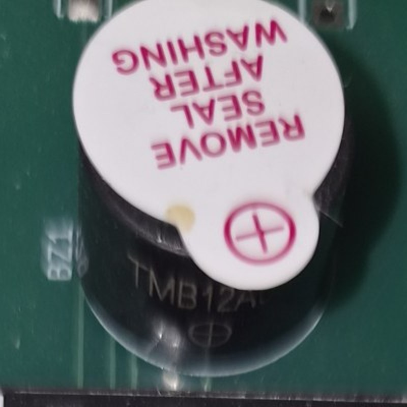
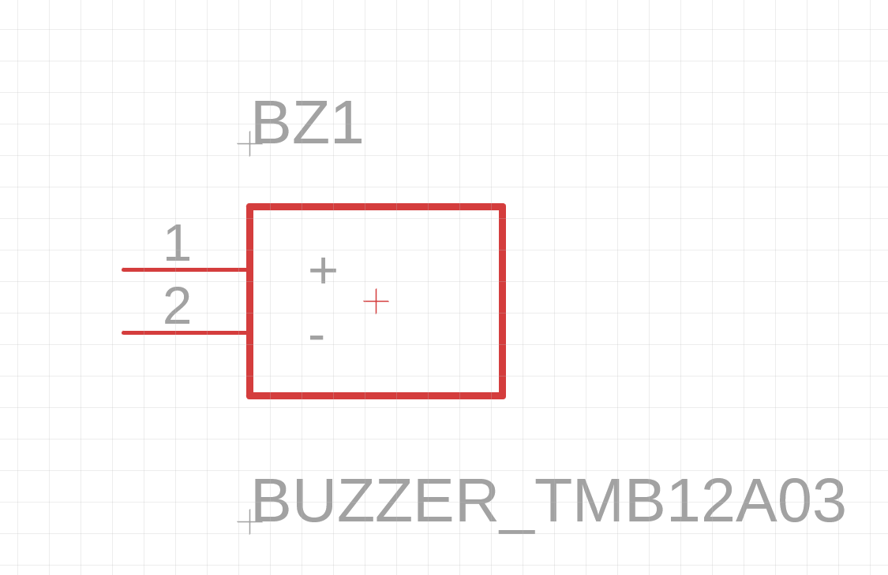
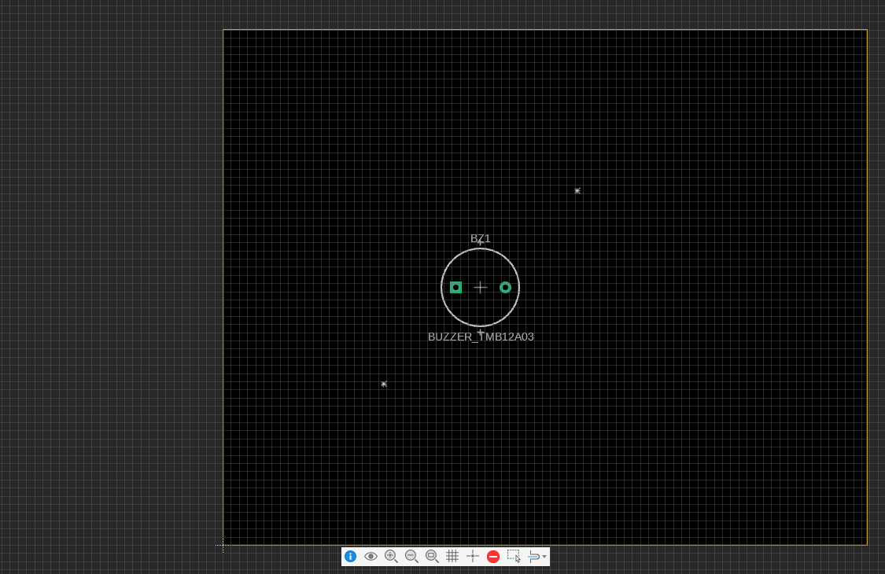

Active buzzer TMB12A03, 3 V, 12 mm
Active magnetic buzzer: it has its own oscillator, so plain DC on its legs gives a steady tone of about 2.3 to 2.4 kHz (no PWM needed).
איפהWhere: kit
- ✓ סימבולsymbol
- ✓ פוטפרינטfootprint
- ✓ מודל תלת-מימד3D model
על הלוחותOn boards: 12 Tiny Arcade
כל הפרטיםAll the details
Active magnetic buzzer: it has its own oscillator, so plain DC on its legs gives a steady tone of about 2.3 to 2.4 kHz (no PWM needed). Rated 3 V. The + leg is marked on the body and the seal sticker. The seal keeps flux out during washing: peel it off after soldering, or the buzzer stays quiet.


פיניםPins
| # | name | kind | note |
|---|---|---|---|
| 1 | + | pas | positive: straight to the 3V3 rail |
| 2 | - | pas | negative: to the transistor's collector or drain, which switches it to GND |
מידות, ומאיפה כל אחתDimensions, and where each came from
- pitch: 7.6 mm (the sellers' listings (pitch 7.6 mm) and the footprint name BUZ-TH_BD12.0-P7.60; the owner measured about 8 mm with a ruler, 2026-11-19)
- diameter: 12.0 mm (the sellers' listings (12 mm); not measured on this one)
- height: 9.5 mm (the sellers' listings (9.5 mm above the board); not measured on this one: measure before the box)
פוטפרינטFootprint
type single_row, name BUZZER_TMB12A03, per_row 2, pitch 7.6, drill 1.0, pad 1.8, body_diameter 12.0
pitch 7.6 mm from the sellers' listings and the common footprint BUZ-TH_BD12.0-P7.60; the owner measured about 8 mm with a ruler, which agrees within a ruler's reading. Drill 1.0 mm for legs of about 0.6 mm. The circle is the 12 mm body
מודל תלת-מימד3D model
0 תיבות ו-1 גלילים, לכל מידה המקור שלה; ממנו נבנים הלוח בתלת-מימד והקופסה.0 boxes and 1 cylinders, every size with its source; the board in 3D and the case are built from it.
קבציםFiles
datasheet · part.json · buzzer_tmb12a03.lbr
יצרןMaker: TMB12A03 (made by Huaneng and by YUEXIN, among others; the maker of this one is not marked)